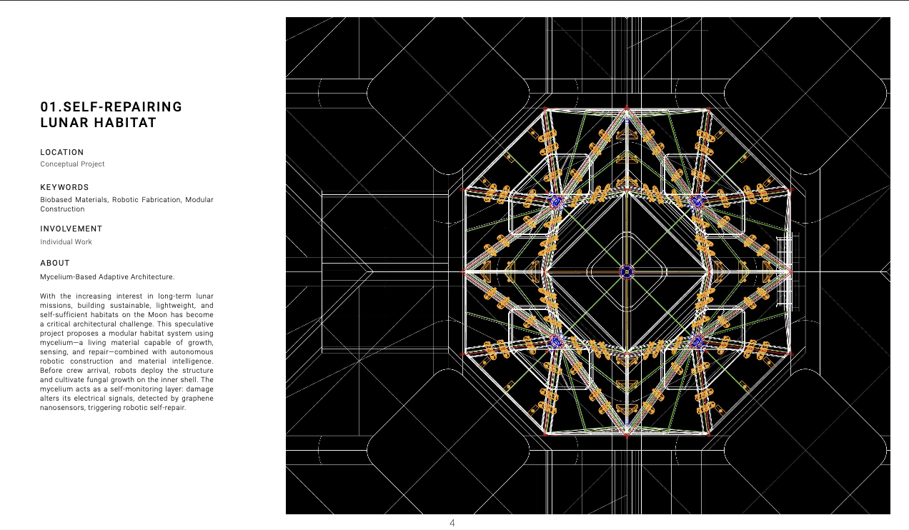

About Me
Hej! This is Zhuoxuan C. I am a web developer and space designer with a passion for creating beautiful and functional digital experiences.
In my free time, I enjoy exploring new technologies and make small games on Pico-8.
Skills
- Web Development: HTML, CSS, JavaScript, React
- Design: Figma, Adobe Photoshop/Illustrator/InDesign, AutoCAD
- 3D Modeling: Blender, Rhino, Grasshopper, SketchUp
- Game Development: C#, Unreal Engine, Unity
- 3D Printing: BambuHandy, PrusaSlicer
Languages
- English - Fluent
- Chinese - Native
- Swedish - Intermediate
Projects
Develop
- Project 1: E-commerce Website - An online store
- Project 2: Pico-8 Game - A small game developed using the Pico-8 fantasy console.
Design
- Project 1: SELF-REPAIRING LUNAR HABITAT - A Mycelium-Based Adaptive Architecture. 
- Project 2: BUILD THE JUNGLE - A Medical Station In Yunnan Province.
- Project 3: OVERLAPPING IN THE CLOUDS - A Research On The Overlapping Mode Of Urban And Rural Space.
- Project 4: FLOATING BLOSSOM - A Machanical Device Made For Fluid Space.
- Project 5: SHAPING OF SAND - An Attempt At Robotics Sand Printing.